3
Soluciones Tecnológicas
En CAL Solutions desarrollamos software empresarial para consultorios, clínicas, hospitales y empresas. Nuestras soluciones están diseñadas para optimizar procesos, centralizar información y facilitar la toma de decisiones mediante tecnología moderna, segura y escalable.
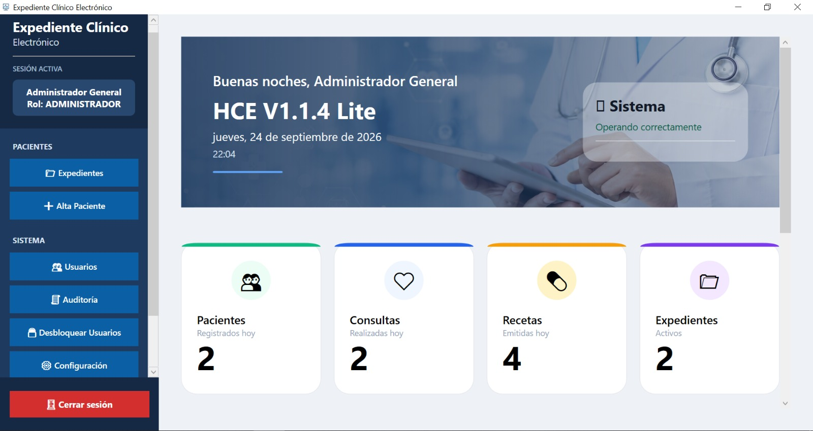
Soluciones Tecnológicas
Tecnología Microsoft
Base de Datos Empresarial
Desarrollo Propio
En CAL Solutions desarrollamos soluciones de software que ayudan a empresas, consultorios, clínicas y hospitales a optimizar procesos mediante aplicaciones modernas, intuitivas y seguras.
Nuestro objetivo es transformar procesos mediante tecnología confiable, facilitando la administración de información y mejorando la productividad de cada organización.
Nuestro producto principal, CAL HCE, integra expedientes clínicos electrónicos, consultas médicas, pacientes, recetas profesionales, estadísticas, respaldos y herramientas administrativas dentro de una plataforma moderna y fácil de utilizar.
En CAL Solutions trabajamos con principios que garantizan software confiable, seguro y preparado para evolucionar junto con las necesidades de nuestros clientes.
Desarrollamos soluciones utilizando tecnologías modernas, metodologías ágiles y una mejora continua enfocada en generar valor para cada organización.
Protegemos la información mediante arquitecturas robustas, buenas prácticas de desarrollo y tecnologías confiables para garantizar la integridad de los datos.
Creamos software preparado para crecer junto con empresas, consultorios, clínicas y hospitales, adaptándose a nuevas necesidades sin perder rendimiento.
En CAL Solutions diseñamos, desarrollamos e implementamos software moderno para empresas, consultorios, clínicas y hospitales, utilizando tecnologías robustas, seguras y escalables.
Aplicaciones de escritorio, web y móviles desarrolladas completamente a la medida de cada organización.
Sistemas especializados para consultorios, clínicas y hospitales, orientados a mejorar la atención médica y la administración clínica.
Transformamos procesos manuales en flujos digitales para aumentar la productividad y reducir tiempos operativos.
Diseño, implementación y optimización de bases de datos PostgreSQL y SQL Server para aplicaciones empresariales.
Conectamos aplicaciones, procesos y bases de datos para centralizar la información y mejorar la operación diaria.
Acompañamiento técnico continuo mediante mantenimiento, mejoras, actualizaciones y soporte especializado.
Cada producto ha sido diseñado para resolver necesidades reales, utilizando tecnologías modernas, interfaces intuitivas y una arquitectura preparada para crecer junto con tu organización.
Sistema de Historia Clínica Electrónica desarrollado para consultorios, clínicas y hospitales.

Punto de venta profesional diseñado para controlar ventas, inventario, clientes y reportes desde una sola plataforma.

Aplicación Android para consultar productos de forma rápida, organizada y sin necesidad de conexión permanente.
Una plataforma integral desarrollada para consultorios, clínicas y hospitales que permite administrar expedientes clínicos, consultas médicas, recetas, estadísticas y configuraciones desde una interfaz moderna, intuitiva y segura.
CAL HCE centraliza la información médica para facilitar el trabajo diario del personal de salud, agilizar la atención al paciente y mantener organizada toda la información clínica mediante una plataforma desarrollada completamente por CAL Solutions.
Explora algunas de las principales pantallas de CAL HCE. Cada módulo fue diseñado para agilizar la atención médica y facilitar la administración clínica.
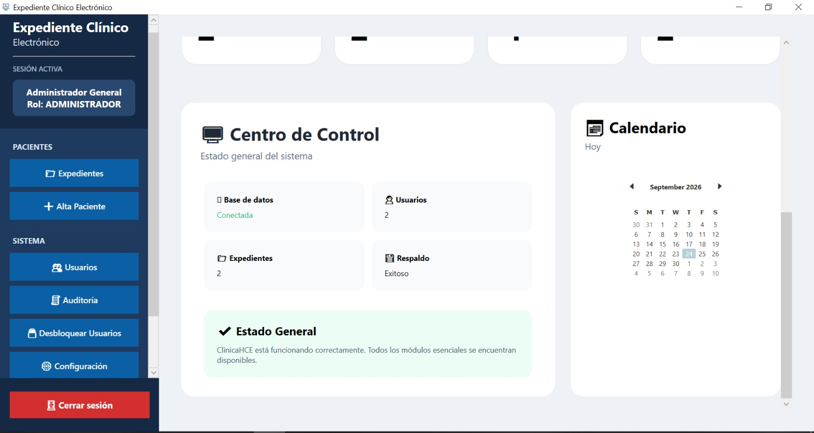
Acceso seguro mediante autenticación de usuarios y control de permisos.
Indicadores, actividad reciente y accesos rápidos desde una sola pantalla.
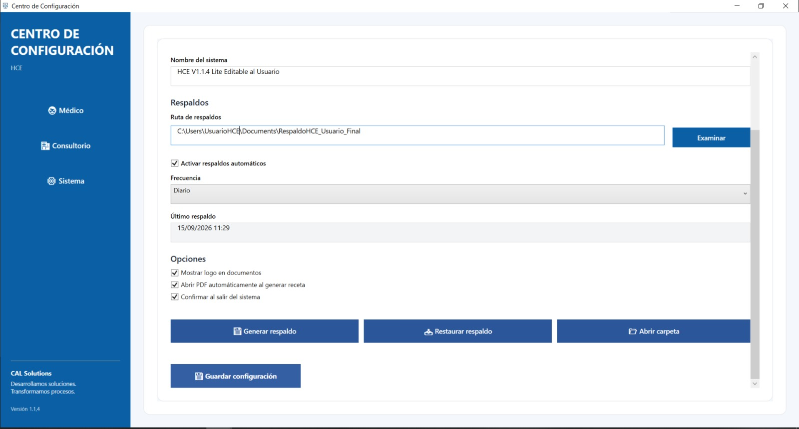
Administración completa del padrón de pacientes.
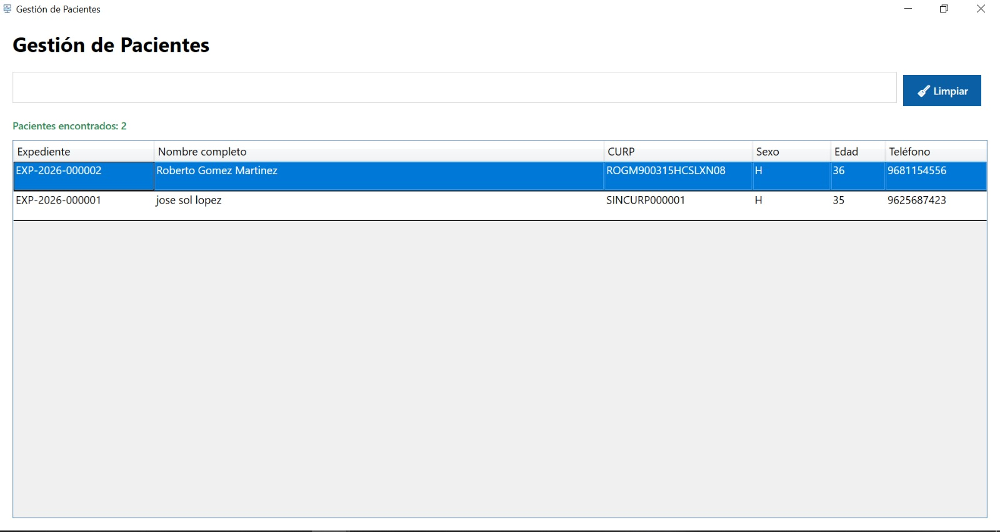
Consulta rápida de toda la información clínica del paciente.
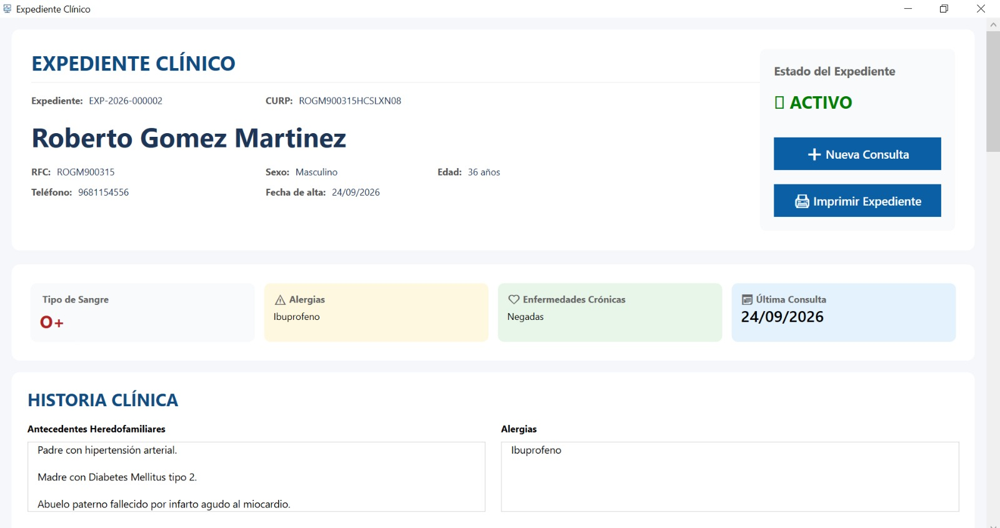
Registro completo de la atención médica.
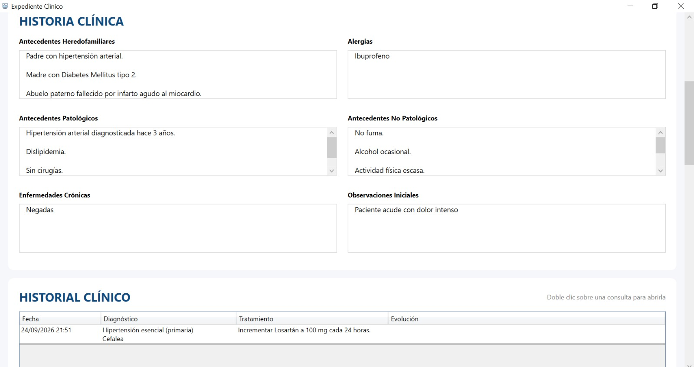
Antecedentes médicos organizados en un solo lugar.
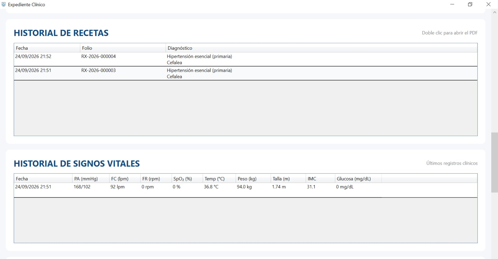
Captura y seguimiento de parámetros clínicos.
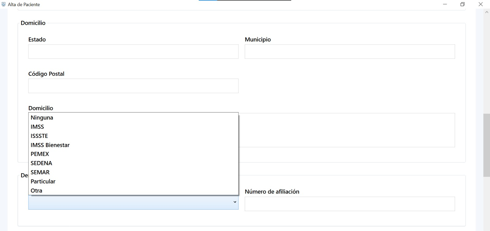
Generación automática de recetas profesionales en PDF.
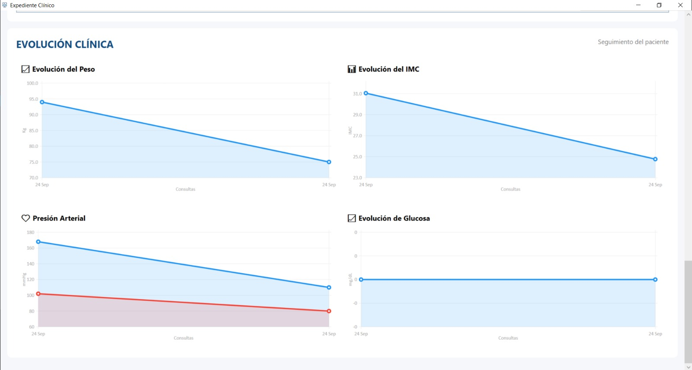
Indicadores para el seguimiento de la operación clínica.
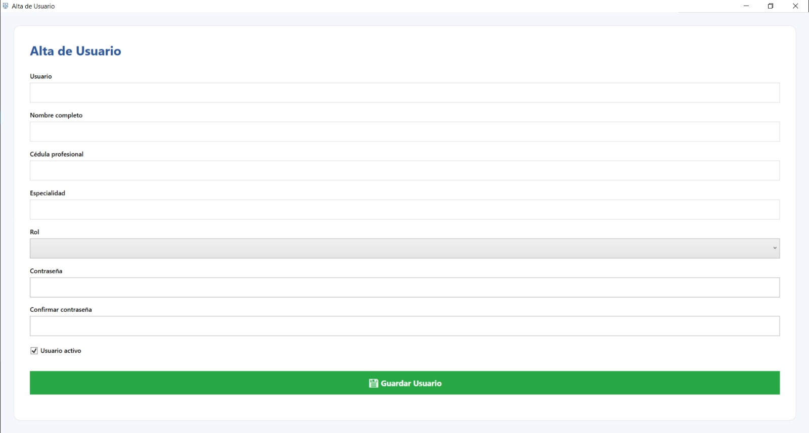
Generación de respaldos de la información del sistema.
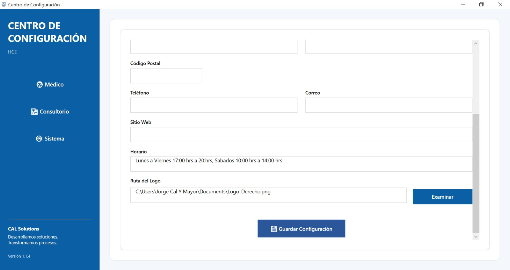
Administración general de parámetros del sistema.
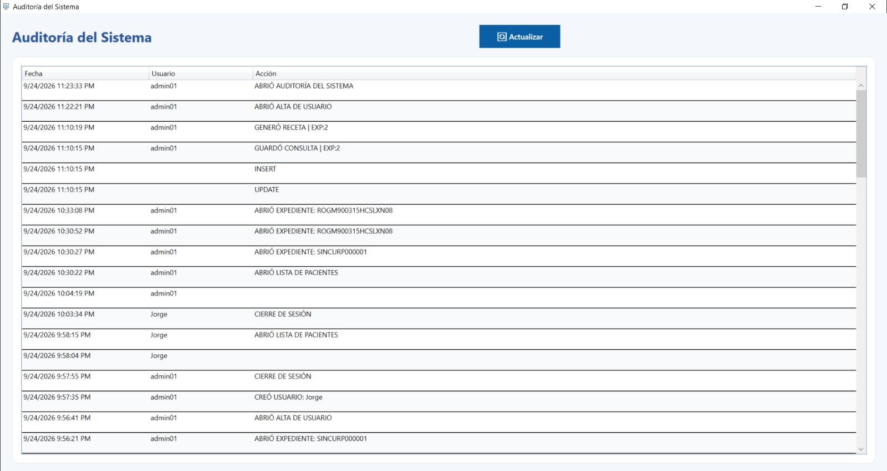
Registro de eventos y acciones realizadas por los usuarios.
Cada módulo de CAL HCE ha sido desarrollado para agilizar la consulta médica, reducir tiempos administrativos y mantener la información clínica organizada y segura.
Registra toda la atención médica desde una interfaz intuitiva, incluyendo motivo de consulta, padecimiento actual, exploración física, diagnósticos y tratamiento.
Mantén organizados los antecedentes personales, familiares y médicos del paciente conforme a un expediente clínico electrónico moderno.
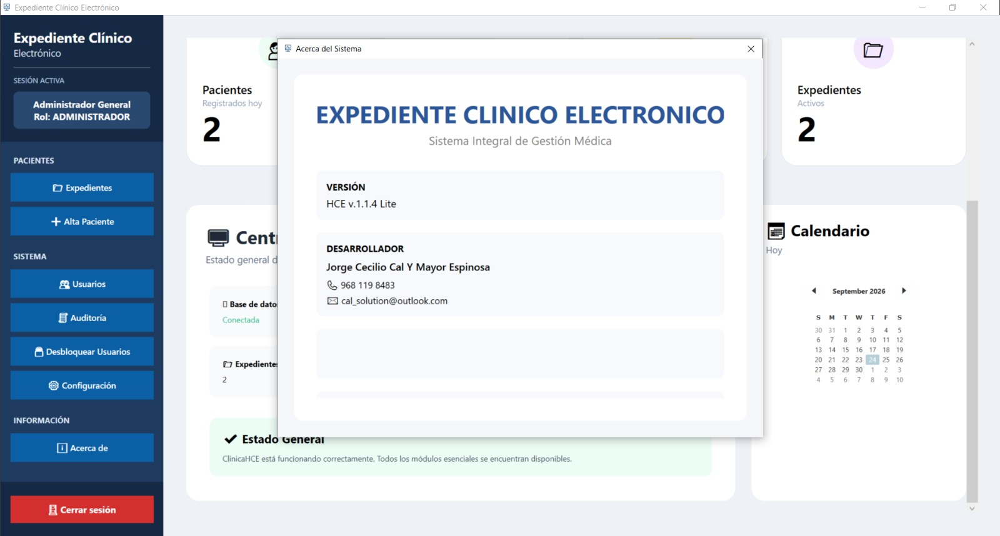
Generación automática de recetas médicas profesionales, listas para imprimir o guardar en PDF con los datos del consultorio y del médico.
Explora algunas de las pantallas principales de nuestra Historia Clínica Electrónica desarrollada para consultorios, clínicas y hospitales.
Acceso seguro mediante autenticación y control de usuarios.

Resumen general de pacientes, consultas y actividad del sistema.
Consulta rápida del padrón completo de pacientes registrados.
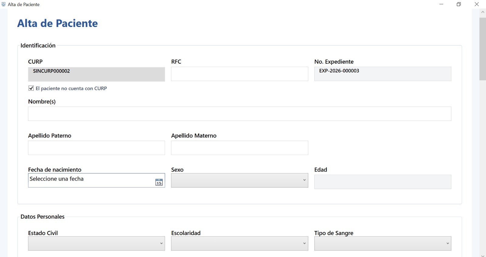
Registro completo de nuevos pacientes con información clínica.
Captura de la consulta con un flujo intuitivo y organizado.
Antecedentes completos del paciente en un solo lugar.
Registro detallado de constantes vitales durante la consulta.
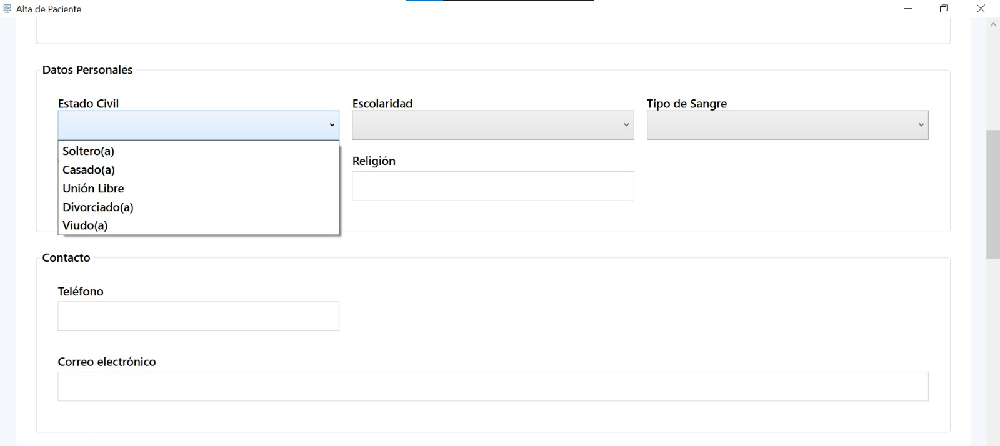
Captura estructurada de la valoración física del paciente.
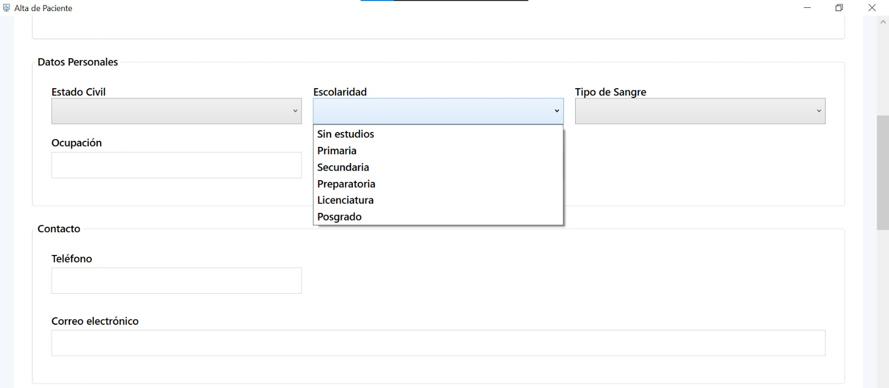
Registro de diagnósticos clínicos y seguimiento médico.
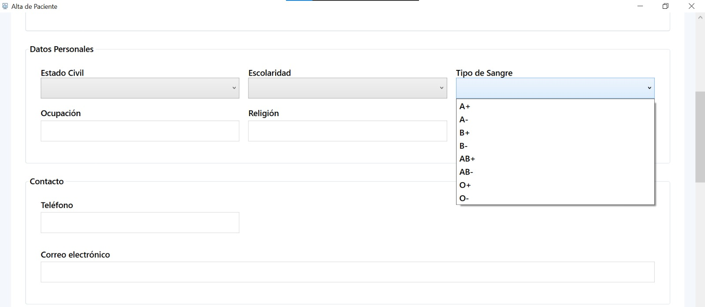
Plan terapéutico documentado de forma clara y ordenada.
Generación automática de recetas profesionales listas para imprimir.
Visualización del documento antes de imprimir o exportar a PDF.
Indicadores para apoyar la toma de decisiones clínicas.
Creación de copias de seguridad de la base de datos.
Registro de acciones realizadas por los usuarios.
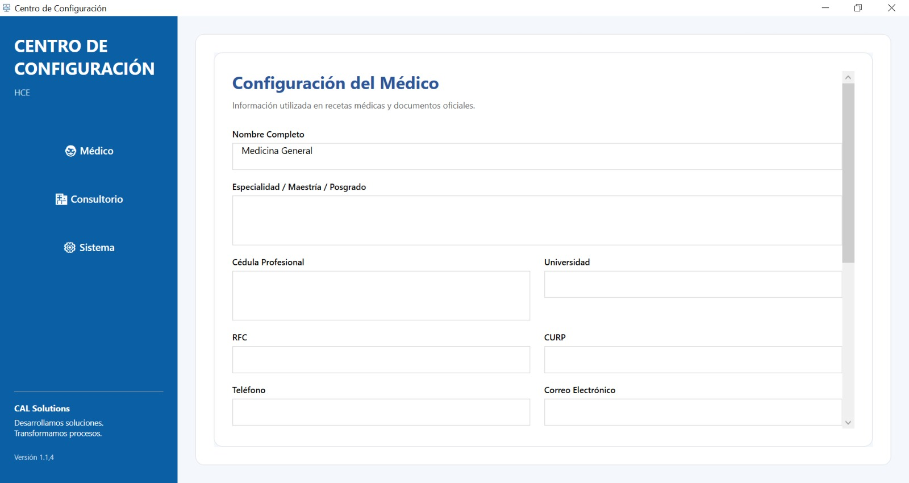
Personalización de información profesional y recetas.
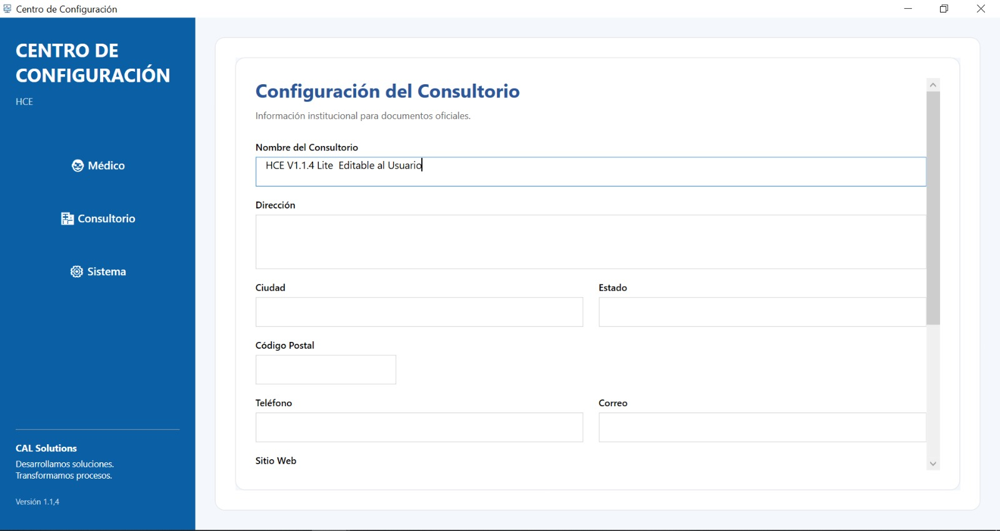
Datos del establecimiento utilizados en documentos oficiales.
Parámetros generales, respaldos y comportamiento del sistema.
CAL Solutions desarrolla software utilizando herramientas profesionales que garantizan rendimiento, seguridad, estabilidad y facilidad de mantenimiento.
Nuestras soluciones están desarrolladas para optimizar procesos, mejorar la productividad y brindar una experiencia moderna, segura y confiable.
Automatiza tareas repetitivas y reduce tiempos administrativos.
Protección de datos mediante autenticación, respaldos y arquitectura moderna.
Aplicaciones rápidas, estables y preparadas para crecer junto con tu empresa.
Acompañamiento durante la implementación, capacitación y evolución del sistema.
Desde consultorios médicos hasta empresas comerciales, desarrollamos soluciones tecnológicas modernas que automatizan procesos, centralizan la información y mejoran la productividad.
Agenda una demostración de CAL HCE o cuéntanos tu proyecto. Diseñaremos una solución adaptada a las necesidades de tu organización.
Cintalapa, Chiapas, México
cal_solution@outlook.com
+52 968 119 8483
Desarrollo de Software Empresarial